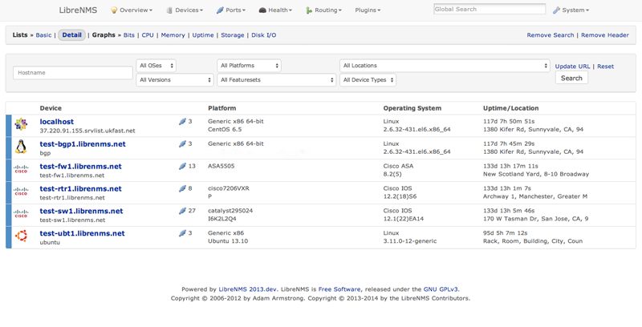

LibreNMS is an autodiscovering PHP/MySQL/SNMP based network monitoring which includes support for a wide range of network hardware and operating systems including Cisco, Linux, FreeBSD, Juniper, Brocade, Foundry, HP and many more.
Download now
